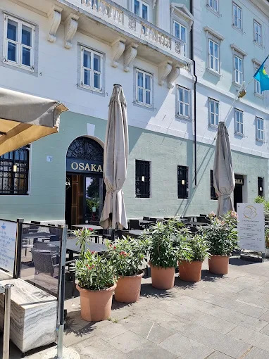
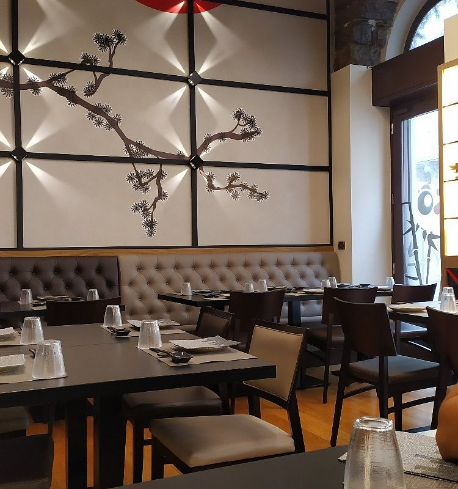
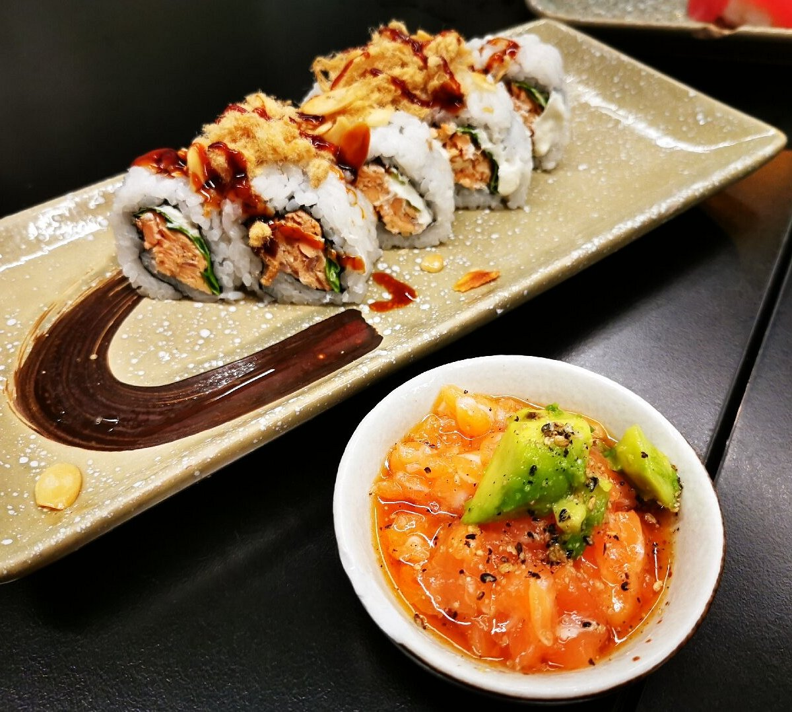
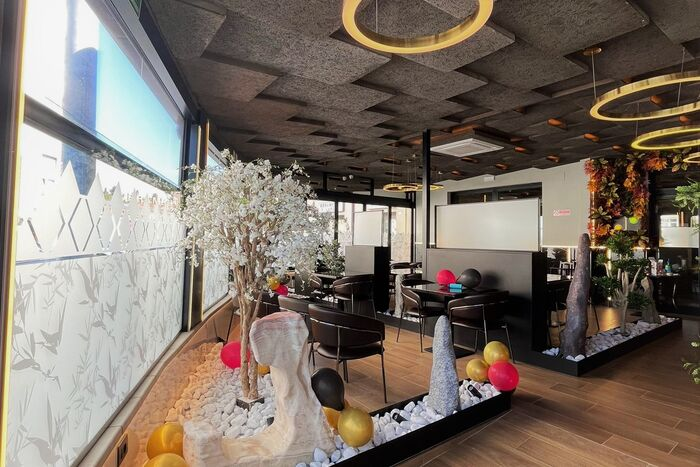
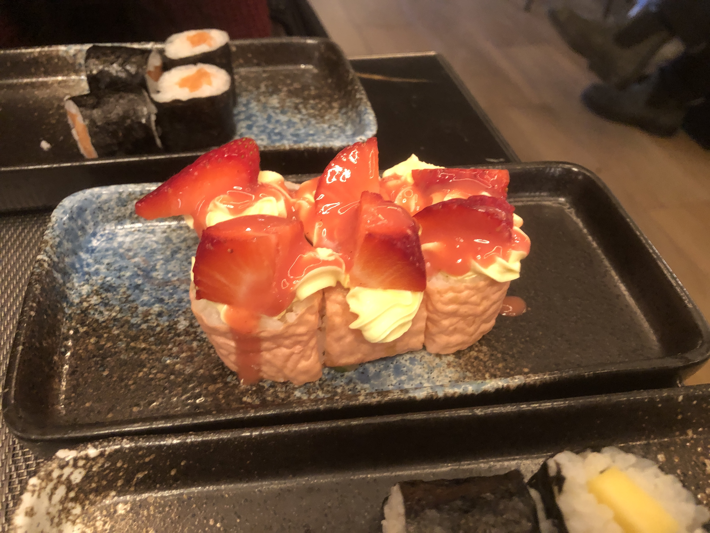
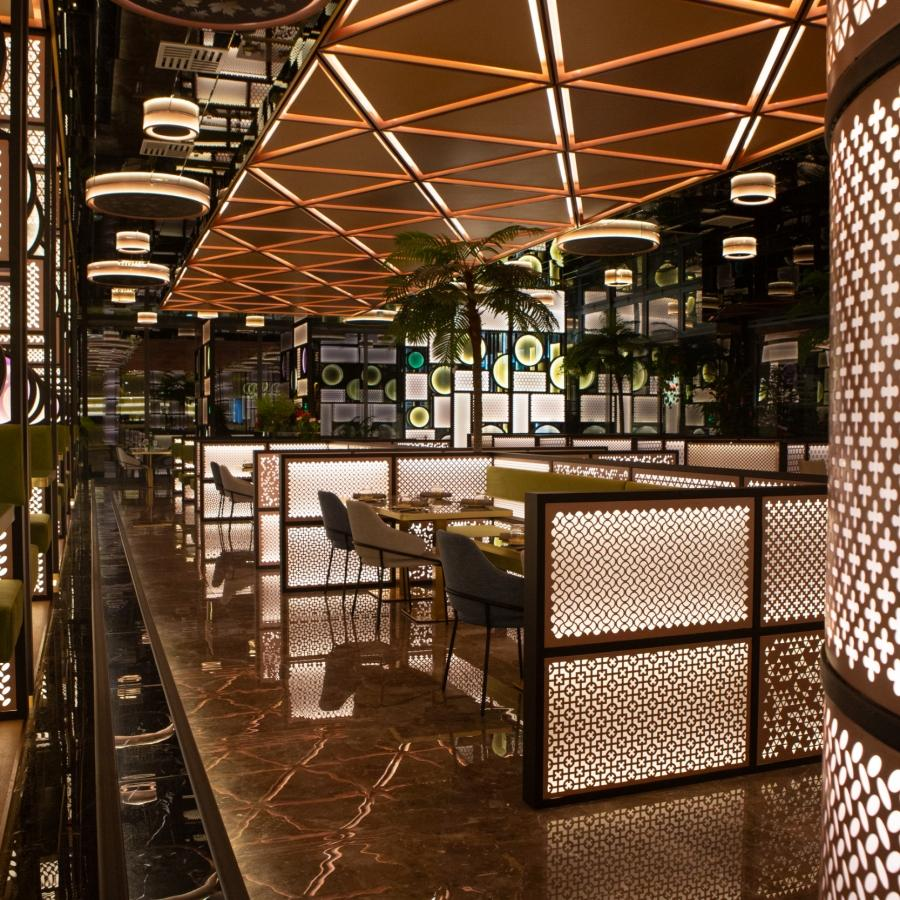
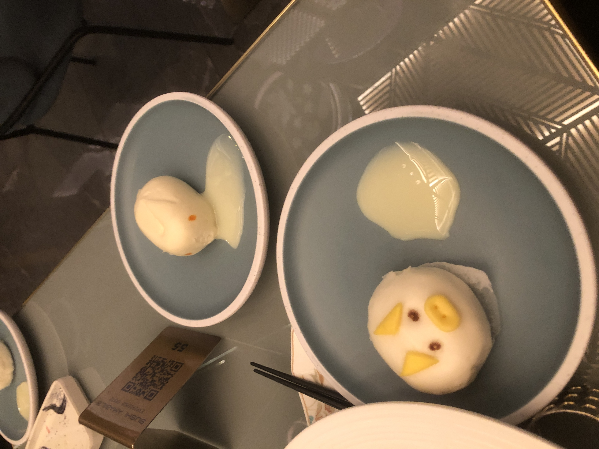

Migliori ristoranti giapponesi a Trieste: la classifica
Disclaimer: sebbene questi ristoranti offrano cibo giapponese in forma "all you can eat", sono gli unici che ho visitato più volte. Pertanto in classifica non ci sono ristoranti giapponesi con menù alla carta.
- Osaka
Perché ho messo questo ristorante al primo posto?
Il ristorante si trova in una posizione centralissima, sulle Rive di Trieste. E' facilmente raggiungibile a piedi o in bus a qualsiasi ora del giorno. Sconsiglio di andarci in auto, spesso si fa molta difficoltà a trovare parcheggio. Il menù è ricco e gli interni sono puliti e curati. Le ordinazioni avvengono via tablet.Foto:


- Nishiku (centro città)
Perché l'ho messo al secondo posto?
Sebbene il ristorante si trovi in centro, tra Piazza Ponterosso e Piazza della Borsa, è molto piccolo. Tuttavia, la scelta dei piatti è molto variegata e i titolari sono gentili. Le ordinazioni avvengono anche in questo caso via tablet.Critica costruttiva:
Se si mangia fuori in estate, a volte gli ombrelloni non riescono a garantire abbastanza ombra.Foto:


- Nishiku (Valmaura)
Perché l'ho messo al terzo posto?
Il menù non è lo stesso del ristorante in centro città, ma ci sono alcuni piatti particolari a base di fragole e formaggio spalmabile che, seppur molto lontani dalla cultura culinaria giapponese, mi sono piaciuti molto. A differenza del locale in centro, si riesce a trovare facilmente parcheggio in zona e il ristorante è più grande. Mi è piaciuto molto il design degli interni.Critica costruttiva:
Quando c'è tanta gente, i tempi di attesa diventano molto lunghi, anche se il cibo è buono.Foto:


- Amabile
Perché l'ho messo all'ultimo posto?
Principalmente per la sua posizione: il ristorante si trova in periferia, in via Flavia. E' facilmente raggiungibile da chi ha la macchina, ma chi si muove in bus perde molto tempo. Tuttavia, i collegamenti in bus sia da Trieste che da Muggia sono molto frequenti. Il design degli interni, accattivante e moderno, spesso risulta un po' scomodo (in particolare i lavandini dei bagni). Mi sono piaciuti molto i dolci a base di pane cinese al vapore con cuore di crema e latte condensato (in foto). Il parcheggio privato è comodo, anche se spesso è pieno.Critica costruttiva:
Spesso non c'è la carta per asciugarsi le mani o manca il sapone. Risolvere queste criticità renderebbe la permanenza nel ristorante più piacevole.Foto:


Leggi anche:
Ristoranti cinesi
Pizzerie